澜起科技与 AI 互联硬件全景
从内存接口芯片到光互联产业链 · 费曼式拆解
知识沉淀文档（含 16 张示意图）
导读
这份文档把一次完整的「费曼小白」式对话沉淀下来。它要回答的核心问题只有一个：在 AI 算力爆发的浪潮里，像澜起科技这样「不造算力」的公司，凭什么受益、卡在哪一环。
阅读主线是「由内到外、由电到光」：先从一根服务器内存条内部讲起（澜起的看家本领，第二、三部分），再放大到一台 AI 服务器的双内存架构（第四部分），接着走到服务器之间的高速互连——也就是 AI 集群「数据搬运」的瓶颈（第五部分），最后拉到整台服务器、机柜、集群的全景，以及与之首尾相接、但属于另一个世界的光互联产业链（第六、七部分）。第一部分先用「中继芯片」这一个概念把全篇统起来，第八部分回到投资视角收口。
讲法上坚持「先大白话和比喻、再上数据和术语」；适合对比的内容用表格呈现；引用到的具体数据与事实，均以脚注标注来源。
目录
资料来源23
第一部分 一句话定性：澜起是谁，「中继芯片」是什么
1.1 一句话定性
澜起是一家 Fabless（只做芯片设计，把制造、封装、测试外包）的互连芯片公司，主业高度聚焦在「服务器内存与高速互连的关键中继芯片」。它不造算力，但有一个反直觉的特性：AI 算力越大、数据搬得越密，它越受益。
本质上，它是 AI 数据中心里「内存高速公路上的收费站」——不造车（算力）、不造货（数据）、不修目的地，只收过路费。要理解这家公司，先得理解「中继芯片」这四个字。
1.2 「中继芯片」到底是什么
「中继」拆开就是钥匙：中 = 中间，继 = 接续、转交。所以一颗中继芯片，就是站在两个高速端点「之间」、负责把东西接力转交下去的芯片——它本身不是端点。
最贴切的类比是古代驿站：一个信使骑一匹马跑不完全程，每隔一段设个驿站换马、换人，消息一站一站接力送到。或者现代的信号中继塔：信号传远了会变弱，中继塔把它收下来、重新放大整形、再发出去。中继芯片干的就是这件事，只不过对象是芯片之间的高速电信号。
它的身份要害在于——它不「算」，也不「存」。算是 CPU、GPU 的事（端点），存是 DRAM、SSD 的事（端点），而中继芯片只管「两端之间的传递」。具体动作有好几种风味：缓冲降载、重定时、放大重生、协议翻译、内存调配——但本质都是同一件事：让数据从 A 到 B 传得通、传得快、传得稳。
把后文将要展开的所有芯片归位，你会发现它们全是「中继」的不同变种（见图 1）。
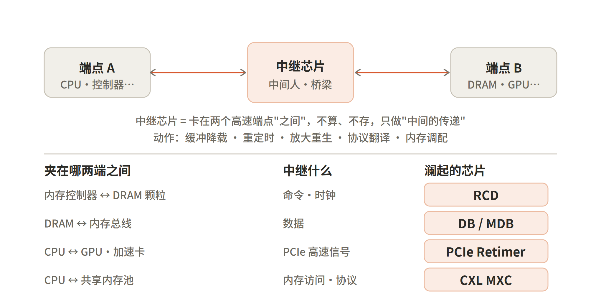
图 1 中继芯片的统一概念：所有产品都是「站在两端之间做传递」的不同形态
1.3 为什么「中继芯片」是门好生意
第一，它卡在所有数据必经的关口。任何信号、数据要从 A 高速通到 B，物理上都绕不开中间那颗中继芯片——就像车要上高速、过路口，就必须经过收费站。
第二，速率越高，中继越不可省。低速时两个端点也许能勉强直连、中继可有可无；可一旦速率拉高，信号衰减、负载过重，没有中继两端根本连不通。AI 把内存频率、PCIe 速率、集群带宽全部往物理极限推，于是中继芯片从「可选」变成了「刚需」。
第三，它不跟造端点的巨头正面竞争。它不去和英伟达抢算力、不和三星海力士抢存储颗粒，只安静地卡在它们中间那个谁都绕不开的位置——一个又安全、又确定的生态位。
所以「它不造算力，但 AI 算力越大、数据搬得越密，它越受益」就顺理成章：算力和数据量上涨，等于过它收费站的「车流」暴涨。它押注的不是谁家算力更强，而是「数据总量一定越来越大、搬得越来越频繁」这个确定性。
第二部分 内存接口芯片①（主力）：RCD / DB / MDB
2.1 先建一个比喻：内存条 = 大仓库
把一根服务器内存条想象成一座大仓库，里面住着几十个 DRAM 颗粒（仓库工人）。远处的 CPU 内存控制器是总指挥，要不停地对这些工人下命令、收发货物。问题是——总指挥离得远、要管的工人又多，直接喊话声音会衰减失真、嗓子也扛不住。于是仓库门口必须站两类「中间人」：一个负责传令（RCD），一群负责搬货（DB/MDB）。澜起卖的就是这两类中间人芯片。
关键是要看懂一根内存条上有两条独立的通路：一条走「命令」（经 RCD），一条走「数据」（经 DB），澜起的两类芯片正好各管一条（见图 2）。
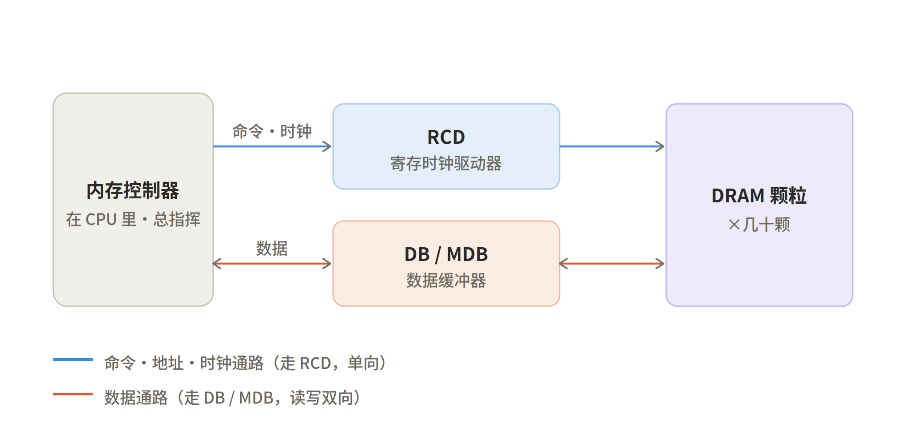
图 2 一根服务器内存条上的两条信号通路：命令走 RCD，数据走 DB/MDB
2.2 RCD（寄存时钟驱动器）= 仓库门口的传令官
RCD 的全称是 Registered Clock Driver。拆开它的名字就懂了：「寄存（Registered）」= 把总指挥发来的命令先暂存一拍、重新对齐到统一的节拍上再发出去，保证几十颗 DRAM 听到的口令整齐划一；「时钟驱动器」= 它负责重新生成并分发「节拍器」（时钟），让所有颗粒踩在同一个鼓点上工作。
它最关键的价值在于「降载」：CPU 不用费力气直接对几十颗 DRAM 喊话（那样电学负载太重、信号传远就衰减失真），只需要对 1 颗 RCD 说一次，由 RCD 这个「大嗓门传令官」整齐响亮地转达给每一颗 DRAM。负载轻了、信号干净了，频率自然能往上提——这就是「信号中继 + 提速」。至于「纠错」，是因为 RCD 还会对命令/地址做奇偶校验（parity check），发现传歪了的口令能报错（见图 3）。
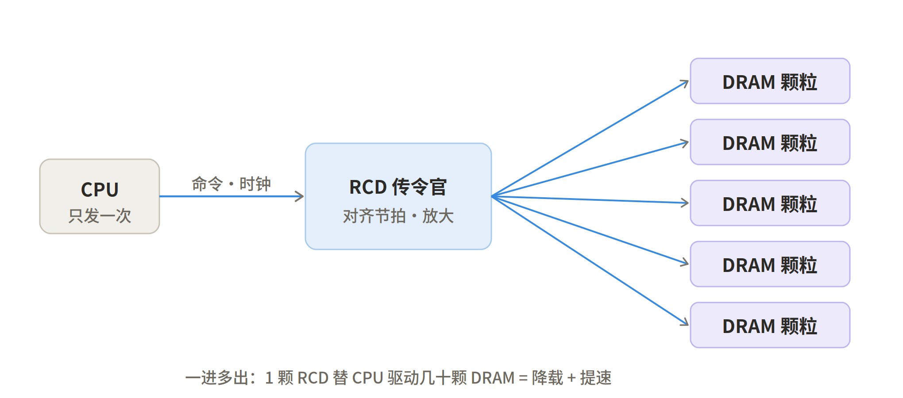
图 3 RCD 的「一进多出」：1 颗 RCD 替 CPU 驱动几十颗 DRAM，实现降载与提速
2.3 DB / MDB（数据缓冲器）= 数据线上的搬运工
RCD 只伺候「命令」那条线；但如果内存条塞了很多颗粒、容量很大，「数据」那条线让 CPU 直接读写也会负载过重、信号劣化。DB（Data Buffer，数据缓冲器）就是架在 DRAM 和总线之间的数据中继站，同样靠「降载」让内存条既能装更大容量、又能跑高速。
MDB 是 MRDIMM 专用的数据缓冲器（Multiplexed Rank Data Buffer，多路复用数据缓冲器）；前缀 M = Multiplexed（多路复用），就是把两个 rank 的数据复用合并、让带宽翻倍的那套机制。它的搭档叫 MRCD（Multiplexed Rank Registering Clock Driver），相当于 RCD 的「复用增强版」。记忆线索很简单：带 M 的（MRCD / MDB）走 MRDIMM「翻倍带宽」路线；不带 M 的（RCD / DB）用于普通 RDIMM / LRDIMM。
2.4 三种服务器内存条：RDIMM / LRDIMM / MRDIMM
关键区分是：不是每根内存条都带数据缓冲器，这正好决定了三种服务器内存条的差别，也解释了为什么会同时出现 DB 和 MDB 两个名字（见图 4 与下表）。
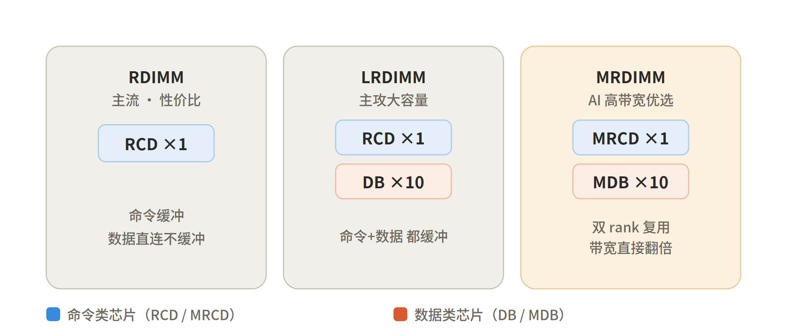
图 4 三种内存条的芯片构成：RDIMM 只有 RCD，LRDIMM 加 DB，MRDIMM 用 MRCD+MDB
| 类型 | 芯片构成 | 缓冲范围 | 定位 |
| RDIMM | 1× RCD | 只缓冲命令，数据直连 | 主流 · 性价比 |
| LRDIMM | 1× RCD + 10× DB | 命令 + 数据都缓冲 | 主攻大容量 |
| MRDIMM | 1× MRCD + 10× MDB | 双 rank 复用，带宽翻倍 | AI 高带宽优选 |
2.5 子代演进与「全子代」的含金量
| 芯片 | 子代速率演进（MT/s） | 进度（截至 2025） |
| RCD | 4800 → 5600 → 6400 → 7200 | Gen3 收入超 Gen2、Gen4 规模出货、Gen5 已送样 |
| MRCD / MDB | 8800 → 12800（+约 45%） | 面向 MRDIMM，「1+10」架构（1 颗 MRCD + 10 颗 MDB） |
2.6 全称速查
| 缩写 | 英文全称 | 中文 |
| RCD | Registered Clock Driver | 寄存时钟驱动器 |
| DB | Data Buffer | 数据缓冲器 |
| MDB | Multiplexed Rank Data Buffer | 多路复用数据缓冲器 |
| MRCD | Multiplexed Rank Registering Clock Driver | 多路复用寄存时钟驱动器 |
第三部分 模组配套芯片②：SPD / PMIC / TS
除了主力的接口芯片，每根 DDR5 内存条还随条出货一组「配套芯片」。它们在前面的「仓库」比喻里，对应仓库的两套后勤系统——供电线和管理线（见图 5）。
3.1 SPD Hub（串行存在检测）= 身份证 + 总机
SPD = Serial Presence Detect（串行存在检测），DDR5 上升级成了 SPD Hub。把它想成内存条的「出厂身份证 / 履历表」——一颗小芯片，里面存着这根条的全部规格：容量多大、能跑多快、各项时序参数、哪家厂造的、序列号是多少。电脑一开机，主板 BIOS 干的第一件事就是读这张身份证，照着档案把内存参数配置对，内存才能正常工作。到了 DDR5，它还兼了「总机/中转站」的活：内存条上那条管理用的边带总线（I3C），流量都经 SPD Hub 中转，再去找 PMIC、温度传感器。
3.2 PMIC（电源管理集成电路）= 内存条自带的配电房
PMIC = Power Management Integrated Circuit。这是 DDR5 一个分水岭式的改动：以前供电管理放在主板上，DDR5 把它搬到了每一根内存条上。主板只负责送来「粗电」（12V/5V），由条上的 PMIC 就地把它精确调成各个芯片真正需要的电压（比如 1.1V）再分配下去。好处是供电更干净、更稳，信号质量更好——频率才敢往上冲。
3.3 TS（温度传感器）
TS = Thermal Sensor。DDR5 颗粒密度高、发热大，每根条上放个温度计实时上报，太热就自动降速保护。
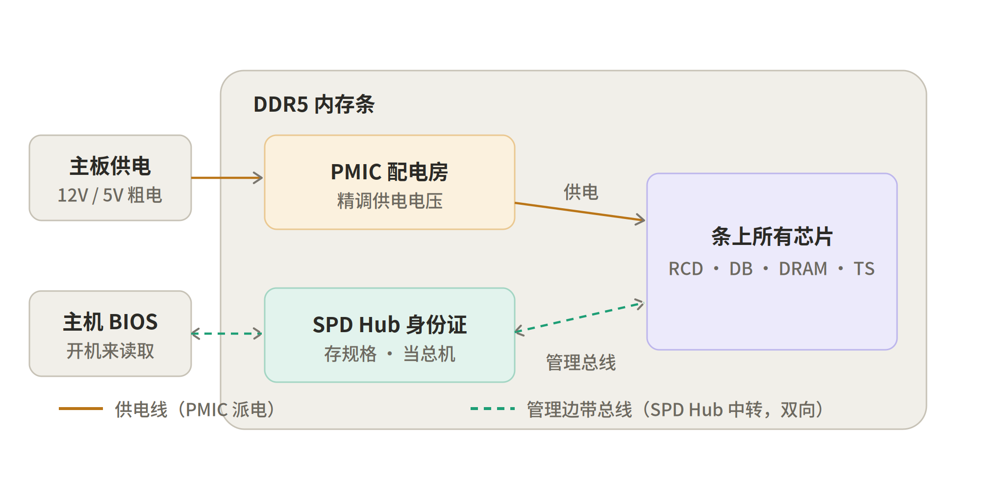
图 5 模组配套芯片：PMIC 把粗电精调供电（供电线），SPD Hub 存规格并中转管理边带总线（管理线）
3.4 投资含义：每根条的「硅含量」抬升
这些芯片恰恰是 DDR5 相比 DDR4 多长出来的「硅含量」。DDR4 时代供电管理在主板上、SPD 也更简单；DDR5 一刀切，把 PMIC、SPD Hub、TS，再加上时钟驱动器 CKD，全变成每根条的标配芯片。换句话说，每卖出一根 DDR5 内存条，配套芯片的颗数和单条价值量都比上一代抬了一个台阶——这是一条跟着 DDR5 渗透率一起放量的增长曲线。而澜起除了主力的 RCD/DB，也提供 SPD Hub、PMIC、TS 全套，所以①（接口芯片）和②（模组配套芯片）在它这儿是打包的。
第四部分 DDR5 与「双内存并行架构」
4.1 DDR5 是什么
先把字面拆开：DDR = Double Data Rate（双倍数据率），指它在一个时钟周期里能传两次数据（时钟的上升沿和下降沿各传一次）；DDR5 就是这套内存标准的第 5 代。DDR 是一代一代往上走的：DDR1 → DDR2 → DDR3 → DDR4 → DDR5，每升一代基本上带宽翻倍、电压更低、单颗容量更大。DDR5 约从 2020 年起步，现在是服务器和 AI 数据中心的绝对主流，正在替换上一代 DDR4（见图 6）。
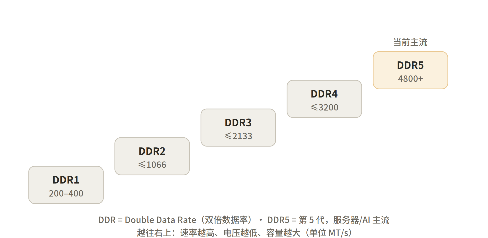
图 6 DDR 内存的代际阶梯：越往右上速率越高、电压越低、容量越大
4.2 DDR5 是规格，不是某一根内存条
一个常见的混淆：DDR5 不是「一根内存条」，而是一套规格 / 一个代际（标准的名字）。就像「5G」是通信制式、你手里那台叫「5G 手机」；「USB-C」是接口标准、你那根线叫「USB-C 数据线」。同理，市面上有无数根内存条（不同品牌、容量、频率），只要遵循 DDR5 这套规范，就都叫「DDR5 内存条」。
而且——前面聊的所有芯片，全都焊在「一根」内存条上：DRAM 颗粒存数据，RCD 传令、DB 搬运、PMIC 配电、SPD 当身份证、TS 测温度，下面伸出金手指插进主板插槽，这一整根才叫「一根内存条」（见图 7）。一台服务器主板上会插好几根这样的 DDR5 内存条，澜起卖的就是焊在每一根条上的那些接口芯片，所以它的生意是「按条收费」。
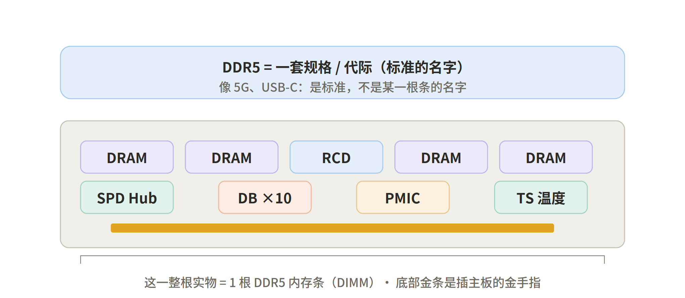
图 7 DDR5 是规格/代际（标准名），一根内存条才是焊满芯片、能插主板的实物
4.3 AI 服务器的双内存：HBM + DDR5
AI 服务器跟普通服务器最不一样的地方，是它带两套独立、并行跑的内存系统。HBM（High Bandwidth Memory，高带宽内存）是把多层 DRAM 像千层糕一样堆叠、通过硅中介层直接贴在 GPU 旁边，专门给 GPU 喂超高带宽的数据，是 GPU 的「专属显存」；它由海力士/三星/美光堆叠封装而成，没有内存条那种 RCD/DB 接口芯片——所以澜起在 HBM 上一分钱不赚。DDR5 则是 CPU 的系统主内存，就是那种插槽内存条，是澜起的地盘（见图 8）。
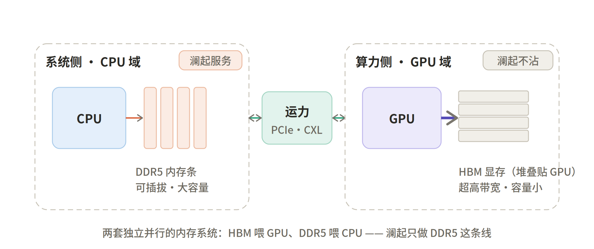
图 8 双内存并行架构：HBM 喂 GPU（澜起不沾），DDR5 喂 CPU（澜起服务），中间由 PCIe/CXL 互联
4.4 破除误解：HBM 不替代 DDR5，反而拉高它
很多人一看 HBM 暴涨就慌——「显存这么火，是不是要把系统内存吃掉，澜起没戏了？」这是把「并行」误读成了「替代」。真相是：HBM 和 DDR5 伺候的是两个不同的主人（GPU vs CPU），干的是两件不同的活，谁也替代不了谁。一台 AI 服务器两样都要：GPU 配 HBM 负责猛算，CPU 仍要靠 DDR5 做数据预处理、调度编排、把海量训练数据和模型 checkpoint 暂存在系统内存里再喂给 GPU。
更反直觉的是，HBM 不但不抢澜起生意，反而把 DDR5 的需求一起带飞：GPU/HBM 卖得越猛 → AI 服务器越造越多、单台越堆越大 → 每台配套的 CPU 系统内存（DDR5）容量也水涨船高（AI 服务器单台 DDR5 容量常是普通服务器的好几倍）→ 澜起按「每根条」收的接口芯片需求随之上升。所以对澜起来说，HBM 是顺风，不是逆风。
第五部分 AI「运力」芯片③（新增长极）
5.1 算力 vs 运力
理解第三类芯片的钥匙是一个对照：算力 vs 运力。算力是 GPU/CPU 算得多快；运力是数据在芯片之间、服务器之间搬得多快、搬得通。AI 大模型训练时，GPU 常常不是在算，而是在等数据——算得再快，数据喂不上来也是干瞪眼。所以「运力」成了 AI 集群真正的瓶颈，也成了一条全新的增长极（见图 9）。
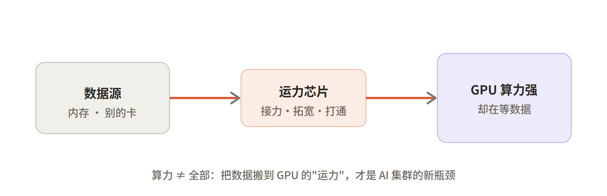
图 9 算力 ≠ 全部：把数据搬到 GPU 的「运力」，才是 AI 集群的新瓶颈
5.2 PCIe Retimer = 信号重生站
PCIe 是服务器内 CPU 连 GPU、加速卡、SSD 的高速总线。速率越往上爬（PCIe 5.0、6.0），信号在电路板铜线里跑十几厘米就严重衰减失真。Retimer 就是架在这条长路中段的「信号重生站」。
关键区分：Retimer ≠ Redriver。Redriver 像个「扩音器」，只是把信号调大音量——连噪音也一起放大，信号该糊还是糊。Retimer 则像驿站里的誊写员：先把快散架的信号完整收下来、听懂里面到底是哪串 0/1、节拍是什么（时钟数据恢复 CDR），然后重新誊写一份全新的、干净的信号，满血再发出去。所以它不是放大，是「重生」（见图 10）。
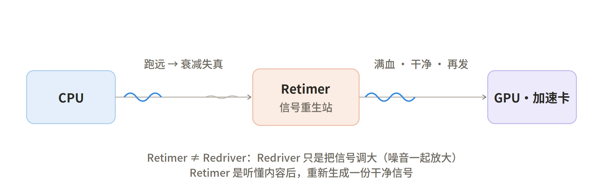
图 10 PCIe Retimer 把衰减失真的信号「听懂后重新生成」，与只做放大的 Redriver 本质不同
5.3 CXL / MXC = 内存池化
CXL（Compute Express Link）是一套建在 PCIe 物理层之上的新协议，让 CPU 和加速器、内存能「一致性共享」。今天的痛点是：每台服务器的内存都是私有、锁死在自己名下的——A 的内存用不完闲置、B 却内存饿到不行，还借不了。CXL 的解法是把内存从「各家私人粮仓」升级成一个「共享大粮库」：建一个 CXL 挂载的内存池，谁缺谁取、按需分配，利用率大涨；容量不够还能从 CXL 口外挂内存给 CPU 扩容。
MXC = Memory eXpander Controller（内存扩展控制器），就是站在共享粮库门口的「管理员/水闸」——它夹在 CXL 链路和真正的 DDR5 内存中间，把 CXL 的「语言」翻译成对内存的读写，控制谁能取、取多少。这颗芯片正是澜起在做的（见图 11）。
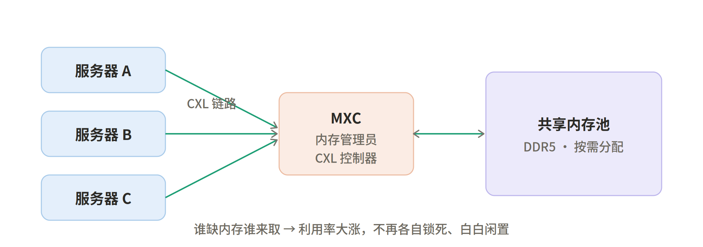
图 11 CXL/MXC 内存池化：多台服务器经 MXC 共享同一内存池，按需分配、利用率大涨
5.4 CKD / 以太网 PHY / 时钟芯片 / MRCD·MDB
CKD = Clock Driver（时钟驱动器）：可理解成 RCD 的「轻量小弟」，只管时钟这一路。DDR5 高频的桌面/客户端内存条（没有完整 RCD 的 UDIMM）靠它在条上重新打节拍，才敢上高频。
以太网 PHY：PHY 是物理层芯片，负责把数字数据真正变成网线/光纤上的电信号、光信号收发出去。万卡 GPU 集群跨服务器互联、东西向流量爆炸，PHY 就是每个网口的「信号收发员、最后一公里」。
时钟芯片：整个高速系统的「标准节拍器」，包括时钟发生器、缓冲器、抖动衰减器。速率越高，对「鼓点又稳又干净」的要求越苛刻；鼓点一抖，高速传输就误码。
MRCD / MDB：即第二部分讲过的 MRDIMM「双 rank 复用、带宽翻倍」的接口套片。
5.5 运力芯片的三个圈层
把这些芯片按「作用范围」归位，会发现它们各守在不同的互联节点上：板内、内存层、集群网络（见图 12）。它们底层吃的是同一套核心技术——高速 SerDes 串行互联，而这恰恰是澜起做内存接口起家的老本行，技术能平移，所以是它的第二、第三增长曲线。
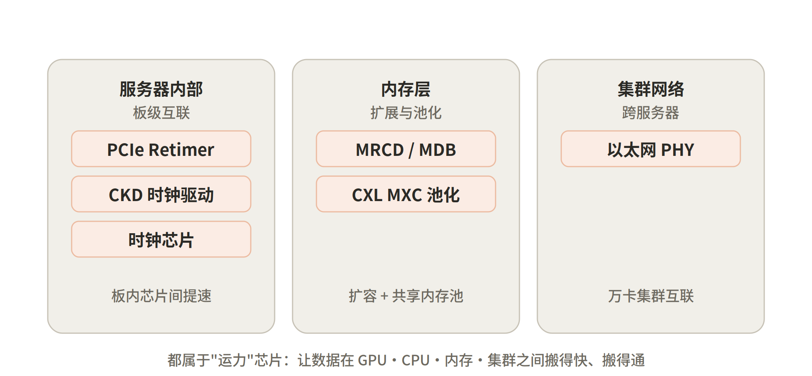
图 12 运力芯片的三个圈层：服务器内部（板级）、内存层（扩展池化）、集群网络（跨服务器）
第六部分 全景：AI 服务器 / 机柜 / 集群
6.1 一台 AI 服务器内部
把前面所有零件摆进一台 AI 服务器：CPU 配 DDR5（澜起服务），GPU 配 HBM（澜起不沾），SSD/NVMe 做本地存储，NIC 网卡负责出网到机柜/集群。澜起在这台机器里卡了三个环节——CPU↔︎DDR5（RCD/DB）、CPU↔︎GPU（PCIe Retimer）、内存扩展池化（CXL MXC），且全在「电信号/铜」这个域里干活（见图 13）。
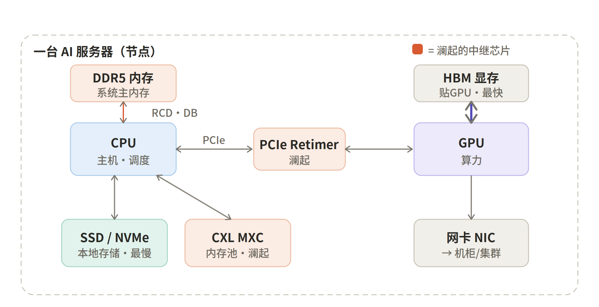
图 13 一台 AI 服务器内部组件全貌（珊瑚色为澜起的中继芯片）
6.2 存储金字塔：HBM > DDR5 > SSD
DRAM、SSD、HBM 三者其实是一个速度/容量金字塔，越往上越快越贵越小、越往下越慢越便宜越大。三者分工：SSD 把海量数据装着，DDR5 把要用的那批调进系统内存预处理，再喂给 GPU 旁边的 HBM 让它高速猛算。
| 层级 | 位置 | 相对速度 | 相对容量 | 角色 |
| HBM | 堆叠贴在 GPU 上 | 最快 | 最小 | GPU 专属显存 |
| DDR5 | 插在 CPU 上（内存条） | 中 | 大 | 系统主内存（澜起的地盘） |
| SSD / NVMe | 本地存储 | 最慢 | 最大 | 存数据集、模型 checkpoint |
6.3 从机柜到集群：铜与光的分界
节点内部距离短，铜线（NVLink、PCIe+Retimer）够用；可一旦跨机柜、跨集群，距离一远，铜线在高速率下扛不住，必须换成光纤。光纤两头要有「光引擎」把电信号和光信号互相转换——传统做法是可插拔光模块，前沿做法是 CPO（共封装光学）：把光引擎直接封到交换机/GPU 的 ASIC 旁边，省电、提速（见图 14）。
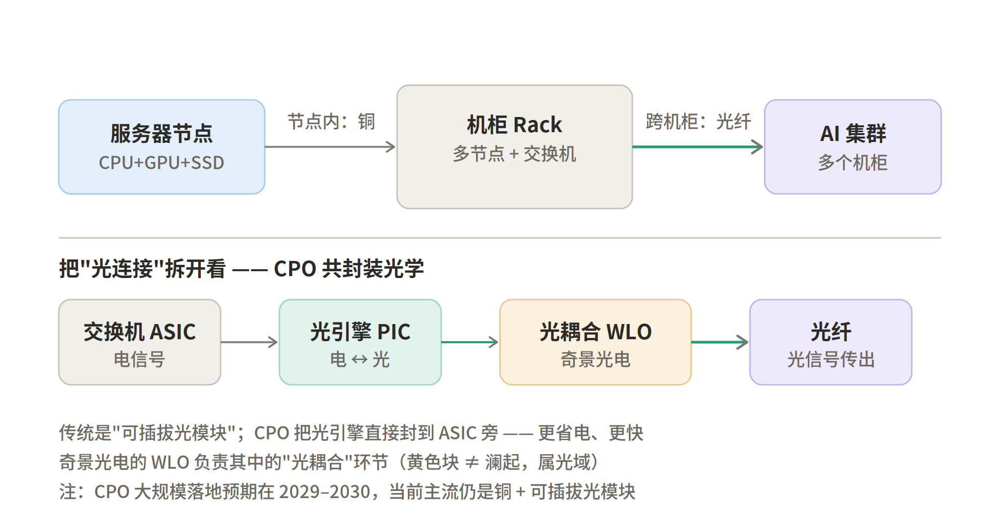
图 14 节点内用铜、跨机柜用光；CPO 把光引擎封到 ASIC 旁，奇景光电的 WLO 负责其中的「光耦合」
6.4 奇景光电（Himax）在 CPO 里干嘛
第七部分 光互联产业链全景
7.1 一个光模块内部在干嘛
光模块的本质是个「电光翻译器」：发射端（TX）把电信号写进光、接收端（RX）把光读回电，中间一堆器件接力（见图 15）。其中「调制」就是调制器干的活——它不发光，只负责控制光的明暗节奏、把 0/1「写」进光里；解调发生在接收端，由探测器 PD + TIA 把光读回电。高速光模块通常用 EML（电吸收调制激光器）把激光器和调制器集成成一颗。
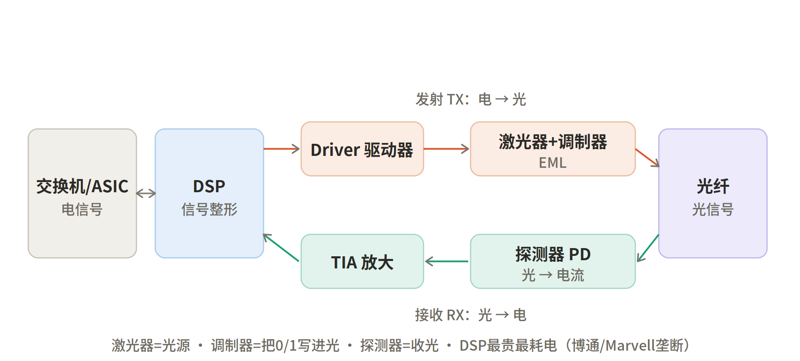
图 15 光模块内部：发射链（Driver→激光器+调制器）写光，接收链（探测器 PD→TIA）读光，DSP 居中整形
6（去掉 DSP 的省电方案叫 LPO，是通往 CPO 的过渡。）
7.2 产业链分层与公司
整条产业链呈「光芯片—光器件—光模块—光设备—终端」的结构，价值量高度集中在上游（见图 16）。
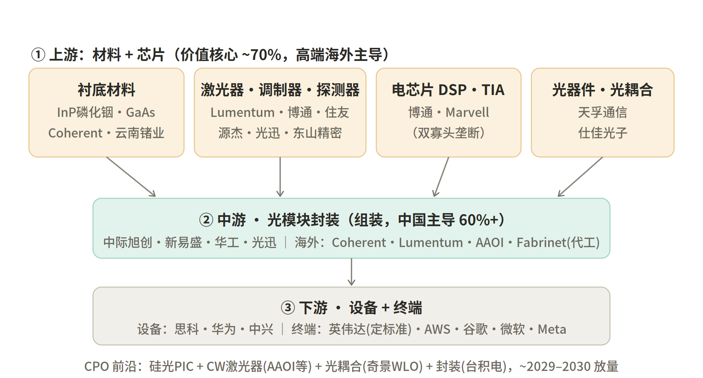
图 16 光互联产业链全景与代表公司（含 InP 衬底、激光器/调制器、DSP、光器件、AOI 与 CPO 前沿）
7.3 上游各板块详解
衬底材料（你问的 InP 在这）。7InP 战略价值极高，英伟达投给 Coherent 的钱就有一部分用于扩 InP 产能。国产做 InP 衬底的有云南锗业、北京通美。
光芯片（激光器 + 调制器 + 探测器 + 硅光）。89英伟达 2026 年同时向 Lumentum 和 Coherent 各投约 20 亿美元，信号很明确：激光器是 CPO 产业链里供需缺口最大、战略价值最高的环节。
国产突围：1011东山精密（收购美国索尔思，目前唯一量产 200G EML 的中国公司），以及长光华芯（VCSEL/硅光）、仕佳光子、永鼎股份等。
电芯片（DSP）和光器件（光耦合）。12龙头是天孚通信，约占全球 12% 份额、英伟达贡献其超六成收入，还有仕佳光子（AWG/PLC 无源芯片龙头）。奇景光电的 WLO 光耦合就归在这一类的 CPO 用途里。
7.4 中游光模块 + 下游设备/终端
13海外有 Coherent、Lumentum、AAOI，以及只做精密代工的「代工之王」Fabrinet。下游是设备商（思科、华为、中兴）和终端（定标准的英伟达、买单的云厂商）。
7.5 AOI（应用光电 / AAOI）在哪
14它在 CPO 时代的杀手锏是推出 400mW 高功率窄线宽 CW 激光器，专为硅光和共封装光学提供稳定光源，可用一颗集中式共享激光器给多个硅光通道供光，还和中兴联合做了 TFLN（薄膜铌酸锂）调制器的 800G 模块。一句话：AOI = 美国本土的「激光器 + 光模块」垂直整合玩家，主打供应链本土化。
7.6 澜起（电域）vs 光域：两篮子
15所以最肥的是上游的激光器 + DSP + InP 衬底；中游光模块是中国走量的「卖铲子」层；下游是定标准的英伟达和买单的云厂商。
而澜起跟这一整条光产业链是两个平行宇宙：澜起守的是「电域/铜」（内存接口 + PCIe Retimer + CXL），是数据「还没出服务器、还在电信号阶段」的中继；这条光产业链管的是「光域」，是数据「要跨机柜、跨集群、变成光跑长途」的环节。两者在物理上首尾相接（电→光的交接点就在网卡/交换机），但在投资上是完全不同的两篮子标的。奇景、旭创、源杰、天孚、AAOI 都是「光」这一篮；澜起是「电」那一篮里卡得最死的那颗收费站。
第八部分 投资 mapping 综述（收口）
把①②③三类业务串起来看澜起的故事就清楚了：
| 层次 | 对应业务 | 逻辑定位 |
| ① 现金牛 | DDR5 接口芯片主力（RCD/DB） | 吃确定性渗透 + 子代迭代，毛利高、确定性强 |
| ② 配套放量 | 模组配套芯片（SPD/PMIC/TS/CKD） | 搭着主力一起放量，每根条的硅含量抬升 |
| ③ 赔率期权 | 运力芯片（PCIe Retimer / CXL MXC 等） | 运力瓶颈被 AI 不断放大，市场空间还在打开 |
一句话收口整篇：算力决定 AI 能多强，运力决定 AI 跑不跑得动——澜起把「内存里的传令官」，升级成了「整个 AI 集群的交通调度 + 内存调度」。它不押注谁家算力更强，而是押注「数据总量一定越来越大、搬得越来越频繁」这个确定性，并卡在数据必经的「电域收费站」上按车流（内存条数、连接数、数据量）收过路费。
而与之首尾相接的「光域」——光模块、光芯片、CPO——是另一条同样受 AI 驱动、但玩家、技术路线、兑现节奏都截然不同的赛道，需要单独作为一篮子标的来研究。
资料来源
文中带脚注标注的数据与事实，来源汇总如下（均为公开行业研究、新闻与公司公告，正文已就近以脚注注明）：
澜起科技财报、券商/行业研报（DDR5 RCD 子代速率与放量节奏、MRCD/MDB「1+10」架构、DDR5 RCD 国际标准牵头）。
英伟达官网 Silicon Photonics 产品页（硅光 CPO 能效与韧性）。
Himax Technologies 2024 年第四季度财报与电话会（WLO 在 CPO 中的光耦合作用）。
东方财富/券商纪要（2026）（CPO 落地节奏与铜互连、可插拔光模块判断）。
慧博、OFweek、知乎光通信/光模块/光芯片产业链深度报告（成本结构、衬底材料、激光器、DSP、光器件竞争格局）。
新浪财经（2026）光模块产业链梳理（中国光模块全球份额）。
深潮 TechFlow（2026）光模块/CPO 产业链梳理（英伟达投资、激光器环节、源杰科技市占）。
知乎/荣格（2025–2026）应用光电（AAOI）报道（转型、营收增速、CW 激光器）。
澜起 DDR5 RCD 子代速率（约 4800→5600→6400→7200 MT/s）、各子代放量节奏、MRCD/MDB「1+10」架构与 8800→12800 MT/s、以及澜起牵头 DDR5 RCD 国际标准等，综合自公开行业研究与澜起财报/研报（2025）。↩︎
澜起 DDR5 RCD 子代速率（约 4800→5600→6400→7200 MT/s）、各子代放量节奏、MRCD/MDB「1+10」架构与 8800→12800 MT/s、以及澜起牵头 DDR5 RCD 国际标准等，综合自公开行业研究与澜起财报/研报（2025）。↩︎
奇景光电（Himax）WLO 技术提供 CPO 所需的光耦合能力、第一代 CPO 小规模量产：Himax 2024 年第四季度财报与电话会。↩︎
英伟达硅光共封装方案宣称带来约 5 倍能效与 10 倍网络韧性：英伟达官网 Silicon Photonics 产品页。↩︎
CPO 成本与技术难题超预期、大规模落地预期约 2029–2030 年，当前阶段更看好铜互连与可插拔光模块：券商纪要/东方财富（2026）。↩︎
800G 以上高速 DSP 由博通与 Marvell 两家垄断 90% 以上：知乎光模块产业链科普（2026）。↩︎
磷化铟（InP）是 100G 以上 EML/高速 DFB/APD 的唯一成熟衬底，砷化镓（GaAs）用于 VCSEL：OFweek/知乎光芯片产业链拆解。↩︎
高端光芯片由 Lumentum、Coherent、博通、住友四家合计约七成份额：知乎光模块产业链科普（2026）。↩︎
英伟达 2026 年分别向 Lumentum 与 Coherent 投资约 20 亿美元，激光器被视为 CPO 产业链供需缺口最大、战略价值最高的环节：深潮 TechFlow 光模块/CPO 产业链梳理。↩︎
源杰科技 10G 激光器全球市占率超 30%：深潮 TechFlow 光模块/CPO 产业链梳理。↩︎
东山精密（经收购索尔思光电）是目前唯一能量产 200G EML 的中国公司：同上。↩︎
天孚通信为光器件龙头，约占全球 12% 份额，英伟达贡献其逾六成收入：同上。↩︎
中国光模块厂商合计占全球 60% 以上、800G 以上超 70%：新浪财经光模块产业链梳理（2026）。↩︎
应用光电（AAOI）从有线电视业务转型 AI 数据中心光互联，2025 年营收同比约 +83%，推出 400mW 窄线宽 CW 激光器供硅光/CPO：知乎/荣格（2025–2026）。↩︎
光器件长期占光模块总成本 70% 以上、光芯片占比已升至 50% 以上、电芯片约 15–20%：慧博/OFweek 光通信产业链报告。↩︎